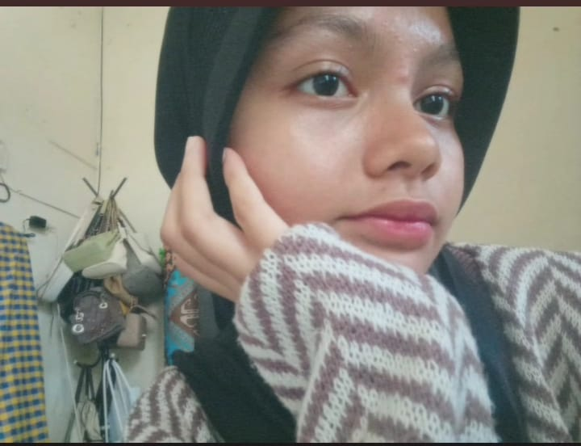

💖
💕
💗
💘
❤️

Aku
Jenis / Kategori
Kamu
7 Maret 2009
Tanggal Lahir
10 September 2009
Nasi Goreng
Makanan
Mie Ayam
Kopi
Minuman
Kopi
"If I Could Be A Constellation" - Kessoku Band
Lagu
"About You" - The 1975
Kucing
Hewan Favorit
Kucing
Ngoding, Dengerin Musik
Hobi
Dengerin Musik, Nyanyi
Syifa Audrey Syahfitri Saragih
Yang Disukai
Dafa Alfariza Harahap
Biru
Warna
Pink
Browser kamu tidak mendukung audio.
Terima kasih sudah hadir dalam hidupku.
Meskipun kita berbeda, tapi justru perbedaan itulah yang membuat kita saling melengkapi.
Semoga hal-hal kecil ini terus mengingatkan kita betapa berharganya satu sama lain. 💖
⬅️ Back